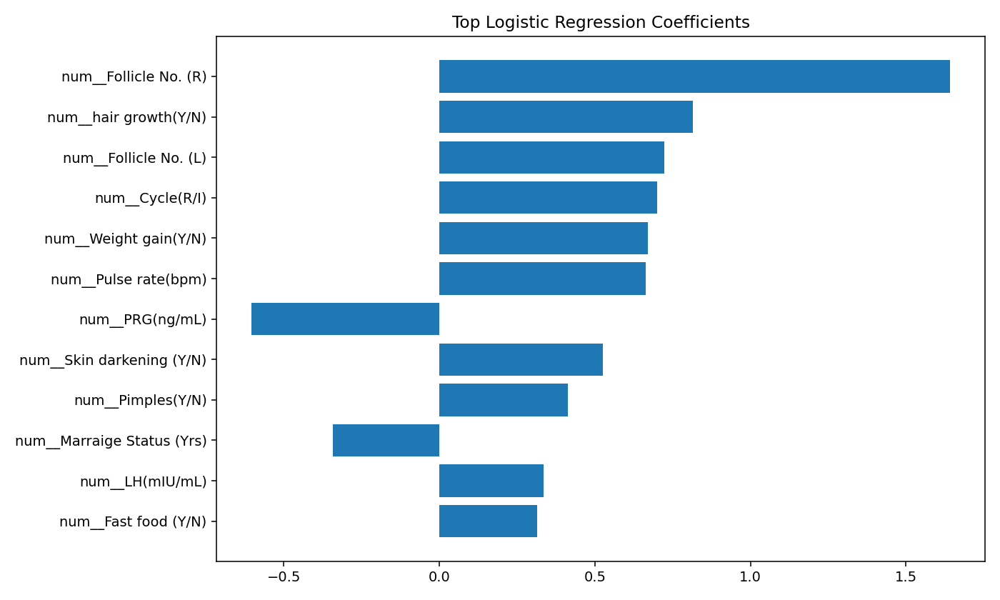
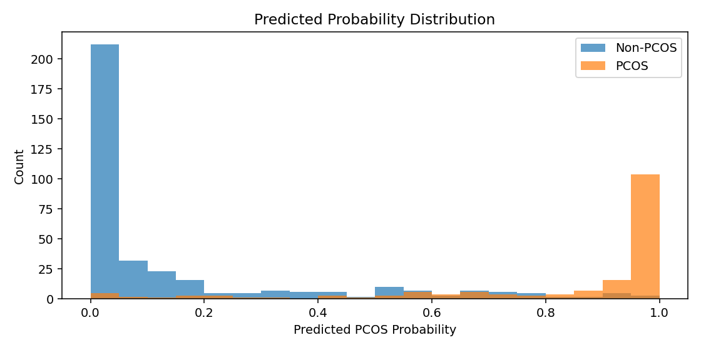

Source: (Main_Dataset)_PCOS_data_without_infertility.xlsx (sheet: Full_new)
| Feature | Correlation |
|---|---|
| Follicle No. (R) | 0.648 |
| Follicle No. (L) | 0.603 |
| Skin darkening (Y/N) | 0.476 |
| hair growth(Y/N) | 0.465 |
| Weight gain(Y/N) | 0.441 |
| Cycle(R/I) | 0.402 |
| Fast food (Y/N) | 0.378 |
| Pimples(Y/N) | 0.286 |
| AMH(ng/mL) | 0.264 |
| Weight (Kg) | 0.212 |
| BMI | 0.200 |
| Cycle length(days) | -0.178 |
Top Coefficients

Predicted Probability Distribution

analysis_summary.json: Core summary metricsbinary_feature_chi2.csv: Chi-square tests for binary featuresnumeric_feature_ttest.csv: Mean difference tests for numeric featurestop_model_features.csv: Model coefficient importancestop_correlations.csv: Top label correlations